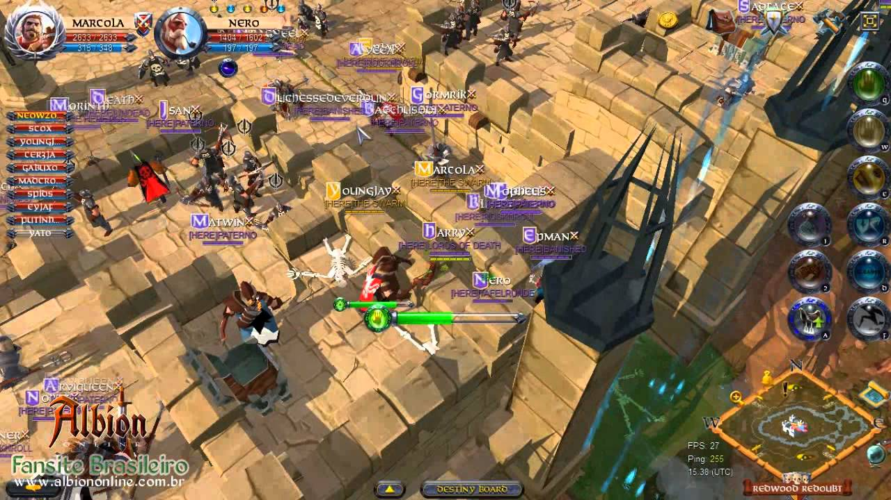

Oficjalna grafika promocyjna
Oficjalna grafika promocyjna
Albion Online to sandboxowe MMORPG osadzone w średniowiecznym świecie fantasy. Gra została wydana przez Sandbox Interactive w 2017 roku.
Najważniejszą cechą jest system "jesteś tym, co nosisz". Nie ma tu sztywnych klas postaci – twoje umiejętności i rola w drużynie zależą wyłącznie od ekwipunku, jaki założysz.

Ekonomia i walka napędzana przez graczy
Ekonomia jest w pełni tworzona przez graczy. Prawie każdy przedmiot w grze, od prostej zbroi po potężne machiny oblężnicze, został wytworzony przez kogoś innego ze zebranych surowców.
Gra oferuje rywalizację PvP z pełnym łupem (Full Loot) w niebezpiecznych strefach oraz pełny cross-play między PC a urządzeniami mobilnymi.
| Rok | Nagroda / Źródło | Wynik |
|---|---|---|
| 2017 | Deutscher Entwicklerpreis (Najlepsza gra mobilna) | Wygrana |
| 2021 | MassivelyOP Awards (Best PvP) | Wygrana |
| 2019 | Pocket Gamer Mobile Games Awards | Nominacja |
| Steam (Wszystkie recenzje) | Bardzo pozytywne | |
| Google Play Store | 4.6/5 |